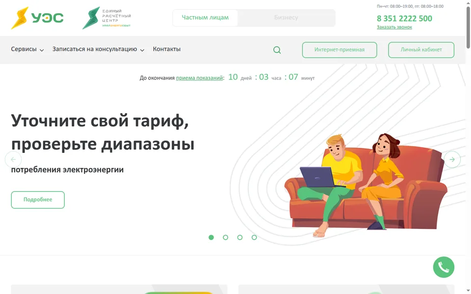

2026 · 1С-Битрикс
Уралэнергосбыт
- Задача
- Публичный сайт энергосбыта для 2 млн клиентов: приём показаний, оплата, обращения.
- Сделал
- Подключил услугу нового поставщика через темы обращений, форму, сделку в Битрикс24 и статус. Провёл аудит 3 638 PHP-файлов, закрыл XSS в оплате и показаниях.
- Результат
- 14 файлов с XSS исправлены и покрыты тестами; интеграции сведены в реестр констант, документация в 61 файле.